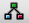
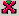
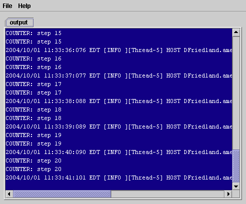
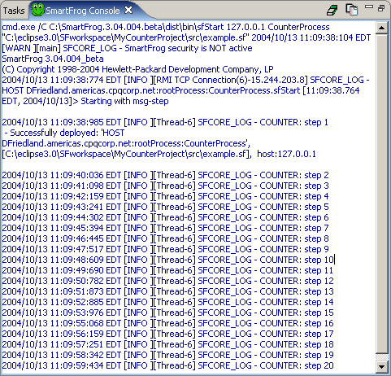
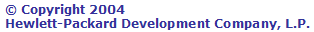

Testing a SmartFrog application
General description
Once you have created your SmartFrog description and Java component files,
you can test and debug your SmartFrog application without leaving the Eclipse
IDE. Icons are provided on the Eclipse toolbar that allow you to access the functionality of the
SmartFrog GUI.
How to test a SmartFrog application
Purpose
To test and debug your SmartFrog application from the Eclipse IDE.
Procedure
- On the SmartFrog Eclipse plug-in toolbar, select the
 icon. This launches the SmartFrog daemon display window. The SmartFrog daemon must be running before you can run your application. The  icon is also provided on the toolbar to stop the SmartFrog daemon.
- Your SmartFrog description file must be selected in the Package Explorer view with the view active or opened in the editor pane with the editor active. In our example, we are using the examples.sf file in the SmartFrog counter example.
- From the SmartFrog Eclipse plug-in toolbar, select the
icon to run the counter
application. This displays the SmartFrog Process dialog. Specify the host name for your process and a unique process name, such as CounterProcess. Click Finish. You will see the output of the counter application in the SmartFrog
daemon display window.

Logging messages are displayed in the SmartFrog Console view.
NOTE: If there is a syntax error in your SF description file, it will logged in this view.
-

The icon is also provided on the toolbar to stop your SmartFrog application.
NOTE: If you change the code in your Java component file, you must stop the SmartFrog daemon,
rebuild your project, and relaunch the daemon to see your changes.
- From the SmartFrog Eclipse plug-in toolbar,
select the
icon to run the SmartFrog Management Console.
This console connects to your Java components displaying their attribute values.
The console allows you to modify these values and to manage the SmartFrog life
cycle methods. For more information about the SmartFrog Management Console,
see the SmartFrog User Manual.
-
To access the full functionality of the SmartFrog GUI, select the
on the SmartFrog Eclipse plug-in toolbar.
Refer to the
SmartFrog GUI Quick Reference Guide
for more information on how to use the SmartFrog GUI.
Summary
The SmartFrog GUI has been integrated into the SmartFrog Eclipse plug-in
allowing you to test your SmartFrog application within the one common IDE.


Eclipse Web site
